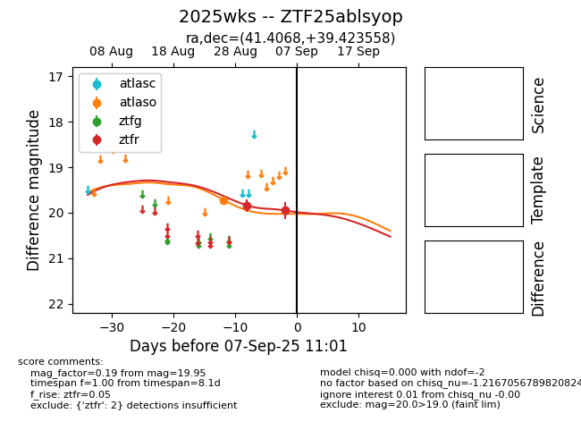

FINK: ZTF25ablsyop
Lasair: ZTF25ablsyop
ALeRCE: ZTF25ablsyop
TNS: 2025wks
YSE: 2025wks
ZTF25ablsyop (ztf,fink)
2025wks (tns,yse)
equatorial (ra, dec) = (41.4068,+39.42356)
galactic (l, b) = (145.8157,-18.32075)

last atlaso=19.72, ztfr=20.06
1 atlaso, 4 ztfr detections